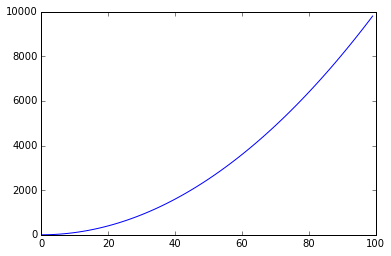

R 파이썬 소프트레이어 클라우드, xwMOOC
한번 시작으로 파이썬 모듈까지
학습 목표
- 과학기술에서 자주 사용하는 파이썬 프로그래밍을 학습한다.
- 순차실행 → 함수 → 리팩토링 → 모듈 순으로 순차 개발한다.
과학을 위한 파이썬 기초
- 작성: Cindee Madison, Thomas Kluyver
- 기여: Justin Kitzes, Matt Davis
- 번역: 이광춘 (xwMOOC)
- 출처: Software Carpentry at SciPy 2015
1. 개별 사물(Individual things)
어떤 프로그래밍 언어에서도 가장 기본 구성요소는 변수 혹은 (특별한 경우) 객체로 불리는 “사물(things)”이다.
파이썬에서 가장 흔한 기본 “사물”은 정수, 부동소수점수, 문자열, 부울, 다양한 자료형의 특수 객체가 포함된다. 이번 학습을 진행하면서 이들 모두를 만나볼 것이다.
비법: 신속히 셀에 있는 코드를 실행하려면, Ctrl-Enter 키를 누른다.
비법: 기존 셀 아래 신규 셀을 신속히 생성하려면, Ctrl-m 그리고 나서 b 를 타이핑한다. 셀을 생성, 삭제, 이동하는 단축키는 화면 상단 메뉴바(menuba)에 있다.
# 사물(thing)
2
3
4
5
6
7 # print를 사용해서 동일한 셀에 사물 다수를 출력한다.
# 문자열에는 단일 인용부호 혹은 쌍 인용부호를 모두 사용함에 유의힌다.
print(2)
print('hello') 2
hello # 사물을 변수로 저장할 수 있다.
a = 2
b = 'hello'
c = True # 부울의 경우 대소문자 구별한다.
print(a, b, c) (2, 'hello', True) # type 함수를 사용해서 사물의 유형(type)을 확인한다.
print(type(a))
print(int)
print(type(b))
print(str)
print(type(c))
print(bool) <type 'int'>
<type 'int'>
<type 'str'>
<type 'str'>
<type 'bool'>
<type 'bool'> # 신규 변수가 이전 변수를 지칭하면 어떻게 될까?
a = 1
b = a
a = 2
## b 값은?
print b 12. 사물을 조작하는 명령어
변수로 데이터를 저정하는 것만으로 그다지 유용성이 크지 않다. 즉시, 데이터와 변수 연산과 조작을 시작해보자.
사물에 연산을 가하는 매우 일반적인 방법이 세가지 있다.
2.1 연산자(operator) 사용
모든 기본 수학 연산자는 숫자에 대해 동작한다. 문자열같은 다른 사물에도 일부 유용한 연산을 수행한다. 양을 비교해서 결과로 bool 변수를 돌려주는 부울 연산자도 있다.
# 표준 수학 연산자는 기대한대로 숫자에 작동한다.
a = 2
b = 3
print(a + b)
print(a * b)
print(a ** b) # a 에 대한 b 거듭제곱(멱승) (a^b 연산은 완전히 다른 연산(비트 xor)이다!)
print(a / b) # 만약 파이썬 2를 사용한다면 정수 나눗셈에 주의한다. 5
6
8
0 # 문자열에 대한 연산자도 있다.
print('hello' + 'world')
print('hello' * 3)
#print('hello' / 3) # 이렇게는 할 수 없다! helloworld
hellohellohello # 부울 연산자는 두 사물을 비교한다.
a = (1 == 1)
b = (3 == 3)
print(a)
print(b)
print(a or b)
print(a and b)
print(a is b) True
True
True
True
True2.2 함수 사용
어떤 언어로도 프로그래밍을 해본 사람이면 매우 친근할 것이다. 예상한대로 작동한다.
# 사물을 조작하는 수천가지 함수가 있다.
print(type(3))
print(len('hello'))
print(round(3.3)) <type 'int'>
5
3.0비법: 함수가 무엇을 수행하는지 알아내려면, 함수 명칭치고 나서 물음표를 타이핑하면 도움말 윈도우가 짠하고 나타난다. 혹은 함수에 무슨 인자를 받아들이는지 알아내려면, 함수명을 입력하고, 여는 괄호를 하고 탭을 친다.
round?
#round(
round(3.14159, 3) 3.142비법: 유용한 함수 다수가 파이썬 내장 라이브러리에 있지 않고 외부 과학 팩키지에 존재한다. 사용하려면 파이썬 노트북 (혹은 프로그램)으로 가져와야 한다. 아마도 가장 중요한 라이브러리가 numpy 와 matplotlib 이다.
# 유용한 함수 다수가 외부 팩키지에 존재한다.
# numpy를 만나보자.
import numpy as np # 팩키지에 무엇이 있는지 살펴보려면, 명칭과 점을 타이핑하고 탭을 친다.
#np?
np.isfortran? # numpy 함수와 "사물" 예제가 몇개 있다.
print(np.sqrt(4))
print(np.pi) # 함수가 아니고, 단지 변수다.
print(np.sin(np.pi))
print(np.cos(np.pi)) 2.0
3.14159265359
1.22464679915e-16
-1.02.3 메쏘드(method) 사용
파이썬 언어로 좀더 깊이 들어가기 전에, “객체(object)”에 관해서 살펴보자. 이번 워크샵에서 객체지향 프로그래밍(object oriented programming, OOP)을 가르치지 않지만 파이썬을 학습하면서 객체와 마주치게 된다 (사실, 정수(ints)와 문자열(strings) 같은 단순해 보이는 사물도 실제로 파이썬에서는 객체다).
가장 단순한 용어로, 객체를 데이터 그 자체와 해당 데이터를 조작하는 함수를 담고 있는 작은 “사물” 묶음으로 볼 수 있다. 예를 들어, 파이썬 문자열은 문자 집합과 문자집합을 조작하는 다양한 함수를 담고 있는 객체다. 객체로 묶여질 때, 이러한 함수를 “메쏘드(method)”라고 부른다.
“일반적인” 함수(인자)(function(arguments)) 구문 대신에, 변수.메쏘드(인자)(variable.method(arguments)) 구문을 사용해서 메쏘드를 호출한다.
# 문자열은 사실 객체다.
a = 'hello, world'
print(type(a)) <type 'str'> # 객체는 메쏘드 묶음을 갖고 있다.
print(a.find('o'))
print(a.capitalize())
print(a.replace('l', 'X')) 4
Hello, world
heXXo, worXd연습 1 - 변환(Conversion)
이번 학습에서, 측정값의 분산을 계산하는 프로그램을 연속해서 만들어 나간다. 이번에는 미터단위 신장. 첫번째 수행할 작업은 구식 측정 > 시스템에서 나온 신장을 변환하는 것이다.
인치를 미터로 바꾸려면, 다음 수식을 사용한다 (변환율은 반올림했다)
metre = inches ÷ 39
inches_in_metre로 변환율에 해당되는 변수를 생성한다.- 원하는만큼 정확하지 않게, 본인 신장을 인치단위 변수(
inches)를 생성한다. inches를inches_in_metre로 나누고 결과를 새로운 변수metres에 저장한다.- 결과값을 출력한다.
보너스
피트(feet)와 인치(inches)를 미터로 변환하세요.
비법: 전체 파이썬 2 사용자를 위한 한가지 (파이썬 3에서는 바뀌었음), 정수 나눗셈 결과. 상기 변환을 명확하게 동작하게 하려면, 다음 >두가지 중 하나를 취한다:
inches_in_metre = 39.(소수점을 추가해서 부동소수점형으로 자료형변환을 추가하거나, 좀더 정확하게 39.4 을 쓴다.)from __future__ import division- 코드 상단에 놓으면 정상 동작한다.
inches_in_metre = 39
inches = 5*12 + 9.5 # 5 피트 9.5인치
metre = inches / inches_in_metre
print(metre) 1.782051282053. 사물 모음 (Collections of things)
본인 신장을 탐색하는 것도 흥미롭지만, 과학에서는 좀더 복잡한 데이터셋을 갖고 작업한다. 이번 예제에서, 신장의 특징과 분포에 관심있다. 파이썬에는 사물 집합을 다룰 수 있는 객체 다수가 제공된다.
파이썬을 과학에 작업할 때 아마도 99%는 다음 네가지 유형의 모음 중 하나를 사용할 것이다: lists, tuples, dictionaries, numpy arrays. 재빨리 각각을 살펴보고, 이것을 가지고 무엇을 할 것인도 확인해 보자.
3.1 리스트(Lists)
리스트는 아마도 가장 다루기 쉽고 가장 유연하게 자료를 담을 수 있는 용기다.
리스트는 꺾쇠 괄호 [] 로 선언한다.
리스트의 각 요소를 a[ind] 구문으로 선택한다.
# 리스트를 꺾쇠 괄호 구문으로 생성한다.
a = ['blueberry', 'strawberry', 'pineapple']
print(a, type(a)) (['blueberry', 'strawberry', 'pineapple'], <type 'list'>) # 리스트 (그리고 모든 모음) 는 또한 꺾쇠 괄호로 색인된다.
# 유의사항: 첫번째 색인값은 1이 아니고 0이다.
print(a[0])
print(a[1]) blueberry
strawberry ## 리스트 끝에서부터 계수할 수도 있다.
print('last item is:', a[-1])
print('second to last item is:', a[-2]) ('last item is:', 'pineapple')
('second to last item is:', 'strawberry') # 색인 사이에 콜론을 사용해서 슬라이싱(slicing)해서 리스트에서 다수 항목에 접근한다.
# 유의사항: 끝 값은 포함되지 않는다 [0,2)
print('a =', a)
print('get first two:', a[0:2]) ('a =', ['blueberry', 'strawberry', 'pineapple'])
('get first two:', ['blueberry', 'strawberry']) # 만약 필요하면 시작과 끝 색인값을 제외할 수도 있다.
print(a[:2])
print(a[2:])
print(a[:])
print(a[:-1]) ['blueberry', 'strawberry']
['pineapple']
['blueberry', 'strawberry', 'pineapple']
['blueberry', 'strawberry'] # 리스트는 다른 것과 마찬가지로 객체로 `append` 같은 메쏘드를 갖는다.
a.append('banana')
print(a)
a.append([1,2])
print(a)
a.pop()
print(a) ['blueberry', 'strawberry', 'pineapple', 'banana']
['blueberry', 'strawberry', 'pineapple', 'banana', [1, 2]]
['blueberry', 'strawberry', 'pineapple', 'banana']비법: 신규 파이썬 사용자를 위한 팁으로 리스트를 포함한 많은 모임(collections)은 사실 데이터 그자체가 아니라 데이터에 포인터를 저장한다.
b=a로 설정하고 나서 a를 변경한 것을 기억하라?
리스트에 이 작업을 실행하면 어떻게 될까?
도움말: copy 모듈을 살펴보라.
a = 1
b = a
a = 2
## b 값은 무얼까?
print('What is b?', b) a = [1, 2, 3]
b = a
print('original b', b)
a[0] = 42
print('What is b after we change a ?', b)
print(a) ('What is b?', 1)
('original b', [1, 2, 3])
('What is b after we change a ?', [42, 2, 3])
[42, 2, 3]연습 2 - 리스트에 (미터 단위로) 다수의 신장정보를 저장한다.
- 주위에 있는 5 사람에게 키가 얼마인지 물어본다 (미터 단위).
heights명칭으로 리스트로 저장한다.- 상기 변수 metres 로 계산된 본인 신장을 리스트에 덧붙인다.
- 리스트에서 첫번째 신장정보를 얻어 출력한다.
보너스
- 두가지 다른 방식으로 마지막 값을 추출한다: 첫번째, 리스트에 마지막 항목에 색인을 사용한다. 둘째로, 리스트가 얼마나 긴지 알지 못한다고 > 가정하고 마지막 항목을 추출한다.
힌트: len() 함수를 사용해서 모임(collection)의 길이를 찾을 수 있다.
heights = [170, 180, 210, 165, 185]
heights.append(metre)
print(heights[0])
print('last value:', heights[-1])
print('last value 2 : ', heights[len(heights)-1]) 170
('last value:', 1.7820512820512822)
('last value 2 : ', 1.7820512820512822)3.2 튜플(Tuples)
튜플에 대해서는 그다지 많이 논의하지 않을 것이다. 다음 두가지 예외사항을 제외하고 튜플은 리스트처럼 작동한다:
- [] 대신에 () 을 사용해서 튜플을 선언한다.
- 튜플을 갖게 되면, 튜플 내부 요소를 변경할 수 없다. 이를 불변(immutable)이라고 부른다.
파이썬 언어를 사용하면 튜플이 나오는 것을 보게 되고, 시간이 흐르면서 언제 튜플을 사용할지에 대한 감이 생기게 된다.
일반적으로, 리스트 대신에 튜플을 사용하는 경우는 다음과 같다:
- coord = (x,y) 처럼 모임(collection)에 위치정보가 극도로 중요할 때 항목을 무리지을 때.
- 예를 들어 shape = (12,23) 처럼, 항목 정보를 우연히 혹은 실수로 변경하지 못하게 만들 때.
xy = (23, 45)
print(xy[0])
xy[0] = "this won't work with a tuple" 23
---------------------------------------------------------------------------
TypeError Traceback (most recent call last)
<ipython-input-11-c7b77af2676f> in <module>()
1 xy = (23, 45)
2 print(xy[0])
----> 3 xy[0] = "this won't work with a tuple"
TypeError: 'tuple' object does not support item assignment3.3 딕셔너리 (Dictionaries)
모임(collection)에 위치정보 대신에 명칭(혹은 다른 유형의 키)으로 사물을 저장하고 불려올 때 딕셔너리를 사용한다. 좋은 예제가 모형 매개변수 집합으로 각각은 명칭과 값이 있다. 딕셔너리는 {}을 사용해서 선언한다.
# 모형 매개변수 딕셔너리 생성
convertors = {'inches_in_feet' : 12,
'inches_in_metre' : 39}
print(convertors)
print(convertors['inches_in_feet'])
print(convertors['inches_in_metre']) {'inches_in_metre': 39, 'inches_in_feet': 12}
12
39 ## 신규 키:값(key:value) 짝을 추가한다.
convertors['metres_in_mile'] = 1609.34
print(convertors) {'inches_in_metre': 39, 'inches_in_feet': 12, 'metres_in_mile': 1609.34} # 키(KEY) 오류 발생
print(convertors['blueberry']) ---------------------------------------------------------------------------
KeyError Traceback (most recent call last)
<ipython-input-14-4c559e44e688> in <module>()
1 # 키(KEY) 오류 발생
----> 2 print(convertors['blueberry'])
KeyError: 'blueberry'3.4 Numpy 배열 (ndarrays)
numpy(넘파이) 배열 (n-차원 배열로 ndarrays로 종종 쓰여짐) 은 파이썬 핵심 라이브러리 일부는 아니지만, 과학 파이썬에 유용해서 이번 핵심 수업에 포함했다. Numpy 배열은 사물 모임으로 동일한 자료형이여만 된다. (지금까지 기술했듯이) 리스트와 유사하게 동작한다. 가장 중요한 것은 다음과 같다:
- 배열에 쉽게 요소별 연산(elementwise operations)과 행렬 대수(matrix algebra) 작업을 수행할 수 있다.
- 배열은 n-차원이 될 수 있다.
- 배열을 연결(concatenate)시킬 수 있지만, 덧붙이기(append)에 상응하는 것은 없다.
배열은 리스크같은 기존 모임(collections)에서 생성할 수 있다. 혹은 몇가지 방식으로 맨땅에서 인스턴스화(instantiation)할 수 있다.
과학 파이썬을 시작할 때, 아마도 언제든 가능하게 ndarrays 배열을 사용하고, 다른 자료형 모임은 특별히 사용할 이유가 있을 때 저장했다가 사용한다.
# numpy 라이브러리를 가져와서 접근한다.
# 라이브러리에 별명(alias)를 생성한다. numpy 에서 흔히 보게 된다.
import numpy as np
# 리스트에서 배열을 생성한다.
alist = [2, 3, 4]
blist = [5, 6, 7]
a = np.array(alist)
b = np.array(blist)
print(a, type(a))
print(b, type(b)) (array([2, 3, 4]), <type 'numpy.ndarray'>)
(array([5, 6, 7]), <type 'numpy.ndarray'>) # 배열에 산술 연산한다.
print(a**2)
print(np.sin(a))
print(a * b)
print(a.dot(b), np.dot(a, b)) [ 4 9 16]
[ 0.90929743 0.14112001 -0.7568025 ]
[10 18 28]
(56, 56) # 부울 연산자는 배열에도 작동하고, 부울 배열을 반환한다.
print(a)
print(b)
print(a > 2)
print(b == 6)
c = a > 2
print(c)
print(type(c))
print(c.dtype) [2 3 4]
[5 6 7]
[False True True]
[False True False]
[False True True]
<type 'numpy.ndarray'>
bool # 배열 색인
print(a[0:2])
c = np.random.rand(3,3)
print(c)
print('\n')
print(c[1:3,0:2])
c[0,:] = a
print('\n')
print(c) [2 3]
[[ 0.59077018 0.31458423 0.13680323]
[ 0.13291322 0.40832062 0.67107557]
[ 0.70846039 0.86910307 0.24621972]]
[[ 0.13291322 0.40832062]
[ 0.70846039 0.86910307]]
[[ 2. 3. 4. ]
[ 0.13291322 0.40832062 0.67107557]
[ 0.70846039 0.86910307 0.24621972]] # 배열을 다른 부울 배열로 색인할 수도 있다.
print(a)
print(b)
print(a > 2)
print(a[a > 2])
print(b[a > 2])
b[a == 3] = 77
print(b) [2 3 4]
[5 6 7]
[False True True]
[3 4]
[6 7]
[ 5 77 7] # ndarrays은 메쏘드 말고도 속성을 갖는다.
#c.
print(c)
print(c.shape)
print(c.prod())
c.prod? [False True True]
(3,)
0 # 배열을 모두 0 혹은 1 로 채우는 손쉬운 방법이 있다.
print(np.zeros(5), '\n')
print(np.ones(5), '\n')
print(np.identity(5), '\n') (array([ 0., 0., 0., 0., 0.]), '\n')
(array([ 1., 1., 1., 1., 1.]), '\n')
(array([[ 1., 0., 0., 0., 0.],
[ 0., 1., 0., 0., 0.],
[ 0., 0., 1., 0., 0.],
[ 0., 0., 0., 1., 0.],
[ 0., 0., 0., 0., 1.]]), '\n') # 숫자 수열로 배열을 쉽게 만들 수 있다.
print(np.arange(0, 10, 2)) [0 2 4 6 8]연습 3 - 간단한 분석에 배열 사용하기
위에서 작성한 신장 배열을 다시 들여다보자.
- 리스트를 배열로 바꾸시오.
- 평균을 계산하시오.
- 특정 값(본인 선택) 보다 큰 신장에 대해 표식하시오.
- 표식된 신장의 평균을 계산한다.
보너스
- 한계값을 넘는 신장을 계수한다.
- mean() 함수는
axis를 선택옵션 인자로 받는다. 이를 통해서 다른 축에 대해 평균을 계산할 수 있다. 예를 들어, 행 혹은 칼럼. (동일한 크기가 아닌) 2차원 배열을 생성하고 > 행별 평균과 열별 평균을 계산한다.shape를 사용해서 평균이 어떻게 계산되는지 이해한다.
heights_array = np.array(heights)
print(heights_array.mean())
print('Mask', heights_array[heights_array > 130])
print('Mask Mean', heights_array[heights_array>130].mean())
print('How many', len(heights_array[heights_array>150])) 151.963675214
('Mask', array([ 170., 180., 210., 165., 185.]))
('Mask Mean', 182.0)
('How many', 5)4. 반복하기
지금까지 수행한 모든 것은 원칙적으로 수작업 계산이다. 이번 절과 다음 절에서 자동으로 계산을 수행하도록 프로그래밍 언어 힘을 이용한다.
반복하는 방법부터 시작한다. 반복하는 가장 일반적인 방법은 for 루프와 while 루프다. (배열의 모든 요소처럼) 모임(collection)에 모든 항목에 대해 순환하고자 할 때 파이썬 for 루프가 유용하다. while 루프는 특정 조건이 만족될 때까지 무한 순환하고자 할 때 유용한다.
아래 기본 예제는 리스트, 튜플, 배열에 for 루프를 돌릴 때 잘 동작한다. 딕셔너리에 루프를 돌리는 것은 약간 다르다. 왜냐하면, 딕셔너리 각 항목에 키와 값이 있기 때문이다. 좀더 자세한 정보는 파이썬 문서를 참조한다.
# for 루프 기본 - 공백을 잊지 않는다!
wordlist = ['hi', 'hello', 'bye']
for word in wordlist:
print(word + '!') hi!
hello!
bye!들여쓰기 유의사항: for 루프에 들어가면 들여쓰기에 유의한다. for 루프 선언 뒤에 들여쓴 모든 문장은 for 루프 일부다. 이런 규칙은 while 루프, if 문, 함수, 등에도 적용된다. 들여쓰기로 인해 파이썬이 가독성이 뛰어난 아름다운 언어가 된 이유 중의 하나다.
만약 일관되지 못한 들여쓰기를 하면, IndentationError가 생긴다. 다행스럽게도, 코드 편집기 대다수는 들여쓰기가 올바르게 되도록 보장한다.
유의사항 파이썬에서 디폴트 기본설정, 공백 4개를 들여쓰기로 사용한다. 대부분의 편집기에서 파이썬을 사용할 때 이 지침을 따르게 환경설정할 수 있다.
# 들여쓰기 오류: 고치세요!
for word in wordlist:
new_word = word.capitalize()
print(new_word + '!') # Bad indent File "<ipython-input-26-421bbc79be09>", line 4
print(new_word + '!') # Bad indent
^
IndentationError: unindent does not match any outer indentation level # for 루프를 사용해서 모임(collection)에 속한 모든 값을 합한다.
numlist = [1, 4, 77, 3]
total = 0
for num in numlist:
total = total + num
print("Sum is", total) ('Sum is', 85) # 종종 항목이 아니라, 모임(collection) 색인으로 루프를 돌리고자 한다면 다음과 같이 한다.
print(wordlist)
for i, word in enumerate(wordlist):
print(i, word, wordlist[i]) ['hi', 'hello', 'bye']
(0, 'hi', 'hi')
(1, 'hello', 'hello')
(2, 'bye', 'bye') # 얼마나 많이 루프를 돌릴지 알지 못하고, 특정 조건이 만족되면 멈추고자 할 때, while 루프가 유용하다.
step = 0
prod = 1
while prod < 100:
step = step + 1
prod = prod * 2
print(step, prod)
print('Reached a product of', prod, 'at step number', step)비법: 유용하고 대량으로 데이터 모임을 만들어내고 나서 수작업으로 결과를 검사하는 것은 거추장스럽다. 아래 코드에 배열을 매우 간단한 그림으로 표현하는 방법이 나와 있다. 추후 좀더 많은 데이터 도식화를 시도할 것이고, 단지 시작에 불과하다.
# 유용한 도식화 라이브러리 pylab을 적재한다.
%matplotlib inline
import matplotlib.pyplot as plt
# x 와 y 데이터를 생성하고 도식화한다.
y = np.arange(100)**2
plt.plot(y) [<matplotlib.lines.Line2D at 0x557b750>]
예제 4 - 분산(Variance)
이전에 수집한 신장의 분산을 계산한다.
상기시키면, 표본 분산은 평균에서 각 관측점 차이 제곱의 합으로 계산된다:
variance = Σ(x − 평균)2 ÷ (n − 1)
평균은 관측점의 평균이고, x는 각 관측점, n은 관측점 개수다.
먼저, 평균을 계산한다:
- 신장 합계로 변수
total을 생성한다. for루프를 사용해서, 각 신장을total에 더한다.- 합을 측정 개수로 나눠서 평균을 알아내고,
mean으로 저장한다.
유의사항: 리스트에서 사물 갯수를 얻으려면, len(the_list) 을 사용한다.
이제, 또 다른 루프를 사용해서 분산을 계산한다:
- 차이 제곱 합계를 구할
sum_diffsq변수를 생성한다. heights에 대해 돌릴 두번째for루프를 생성한다.
- 각 단계에서, 평균에서 신장을 뺀다. 그리고 이를
diff라고 부른다. - 이것을 제곱하고
diffsq라고 부른다. diffsq를sum_diffsq에 더한다.
diffsq를n-1로 나눠서 분산을 얻는다.- 분산을 화면에 출력한다.
유의사항: 파이썬에서 숫자를 제곱하는데, **을 사용한다, 예를 들어. 5**2.
보너스
variance가 0.01 보다 더 큰지 테스트하고 “variance more than 0.01:”를 출력하고, (참 True 혹은 거짓 False) 답도 출력하시오.
#heights = [-1,0,1]
total = 0
for idx in heights:
total = total + idx
mean = total/len(heights)
print("Mean : ", total/len(heights))
sum_diffsq = 0
for idx in heights:
diff = idx - mean
diffsq = diff ** 2
sum_diffsq = sum_diffsq + diffsq
variance = sum_diffsq / (len(heights)-1)
print("Variance : ", variance) ('Mean : ', 0)
('Variance : ', 1)5. 선택하기 (Making choices)
조건이 참인지 검사하고 나서 만약 참이면 이런 행동을 취하고, 만약 거짓이면, 다른 행동을 취하게 만든다. 파이썬에서 if 문을 가지고 이런 작업을 수행한다.
비법: if 문에 부울 값(참 혹은 거짓, True or False)을 반환하는 어떤 표현식도 사용할 수 있다. 일반적인 부울 연산자는 ==, !=, <, <=, >, >= 다. 변수 두개가 동일한지 점검하려면 is 와 is not을 사용한다. 즉, 두 변수가 동일한 메모리 위치에 저장되어 있다는 의미에서 그렇다.
# 단순 if 문.
x = 3
if x > 0:
print('x is positive')
elif x < 0:
print('x is negative')
else:
print('x is zero') # If 문에 부울 변수도 쓸 수 있다.
x = -1
test = (x > 0)
print(type(test)); print(test)
if test:
print('Test was true') <type 'bool'>
False6. 함수와 모듈로 덩어리(chunk) 생성하기
프로그램을 작성하는 한 방식은 위에 기술된 것처럼 파일에 명령어를 쭉 작성하는 것이다. 그리고 나서 결과를 생성하려고 파일을 실행한다. 이 방식이 잘 동작할 수도 있지만, 이러한 방식으로 작성된 프로그램 로직을 따라가는 것은 인지적으로 힘겹다. 또한, 코드를 쉽게 재사용하기 힘들게도 한다 - 예를 들어, 서로 다른 초기값을 갖는 로지스틱 성장 모형(logistic growth model)을 실행하면 어떨까?
코드를 관리가능한 조각으로 쪼개 “덩어리(chunk)”로 만드는 가장 중요한 방법은 함수를 생성하고 나서 이러한 함수를 모아서 모듈로 만들고, 궁극적으로 팩키지화하는 것이다. 아래에서 함수와 모듈을 만드는 방법을 다룬다. 파이썬에서 “덩어리(chunk)”를 만드는 세번째 유형이 클래스지만, 이번 워크샵에서 객체지향 프로그래밍을 다루지는 않는다.
# 하루 종일 함수를 사용했다.
x = 3.333333
print(round(x, 2))
print(np.sin(x)) 3.33
-0.190567635651 # 본인이 함수를 작성하는 것은 매우 쉽다.
def multiply(x, y):
return x*y # 함수가 실행되서, 메모리에 저장되면, 다른 함수처럼 이용가능하다.
print(type(multiply))
print(multiply(4, 3)) <type 'function'>
12 # docstrings을 포함해서 작성한 함수가 무슨 작업을 수행하는지 기술하는 것이 여러모로 유용한다.
def say_hello(time, people):
'''
Function says a greeting. Useful for engendering goodwill
'''
return 'Good ' + time + ', ' + peopleDocstrings: docstring(문서문자열)은 함수가 무슨 작업을 하는지 일러주는 특별한 유형의 주석이다. 함수에 대한 도움말을 찾을 때 마주치는 것이다.
say_hello('afternoon', 'friends') 'Good afternoon, friends' # 인자 모두가 있어야 한다. 그렇지 않으면 함수는 오류를 뱉어낸다.
say_hello('afternoon') ---------------------------------------------------------------------------
TypeError Traceback (most recent call last)
<ipython-input-38-6030d0cc44b7> in <module>()
1 # 인자 모두가 있어야 한다. 그렇지 않으면 함수는 오류를 뱉어낸다.
----> 2 say_hello('afternoon')
TypeError: say_hello() takes exactly 2 arguments (1 given) # 인자에 디폴트 기본값을 부여해서, 예약어 인자 일부를 선택옵션인자로 만들 수 있다.
# 모든 필수 인자는 순서대로 먼저 나와야 된다.
def say_hello(time, people='friends'):
return 'Good ' + time + ', ' + people say_hello('afternoon') 'Good afternoon, friends' say_hello('afternoon', 'students') 'Good afternoon, students'예제 5 - 분산 함수 생성하기
마지막으로, 분산 계산을 함수로 바꿔서 반복해서 오래오래 사용하자. 예제 4 코드를 복사한 다음에 다음을 작성한다:
- 리스트 값을 인자로 받아 분산을 반환하는 함수,
calculate_variance로 코드를 바꾼다. - 작성한 함수가 어떤 작업을 수행하는지 기술하는 docstring을 멋지게 작성한다.
- 다른 값을 갖는 숫자로 작성한 함수를 호출해서 잘 동작하는지 확인한다.
보너스
- 평균을 계산하는 부분을 뽑아내서 별도 함수로 만들어
calculate_variance함수 내부에서 호출하도록 리팩토링 하시오. - 모든 데이터가 정수형일 때도 정상적으로 동작하도록 확실히 하세요.
- 빈 리스트가 전달될 때, 더 나은 오류 메시지를 주게 만드시오. 웹을 사용해서 파이썬에서 예외처리하는 방법을 알아내시오.
heights = [-1,0,1]
def calculate_variance(heights):
'''
Calculate Variance of Sample
sample --> list, result --> variance
'''
mean = calculate_mean(heights)
sum_diffsq = 0
for idx in heights:
diff = idx - mean
diffsq = diff ** 2
sum_diffsq = sum_diffsq + diffsq
variance = sum_diffsq / (len(heights)-1)
# print("Variance : ", variance)
return variance
def calculate_mean(heights):
'''
Calculate Sample Mean
input : list --> mean
'''
total = 0
for idx in heights:
total = total + idx
mean = total/len(heights)
# print("Mean : ", total/len(heights))
return mean
print("Variances from Function: ", calculate_variance(heights)) ('Variances from Function: ', 1)예제 6 - 모듈에 calculate_mean 과 calculate_variance 를 넣으세요.
numpy를 가지고 했던 것과 동일한 방식으로, 함수를 가져올 수 있는 모듈에 넣어서 좀더 쉽게 재사용하게 함수를 만들 수 있다. 모듈을 만드는 것은 매우 간단하다.
- 함수를 새 텍스트 파일로 복사한다. 단, 노트북(notebook)과 동일한 디렉토리여야 한다. 그리고
stats.py라고 이름 붙인다. - 모듈을 가져오려면,
import stats을 타이핑한다.stats.을 입력하고 탭을 치면 모듈에 이용가능한 함수가 나타난다. 가져온 모듈을 사용해서 신장 표본(혹은 다른 난수)의 > 분산을 계산해본다.
import stats
#stats.
stats.calculate_variance(heights) 1